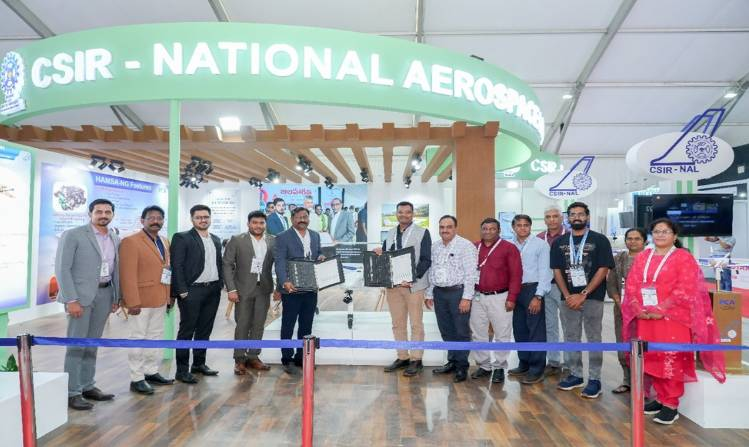
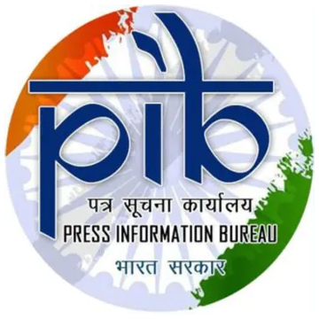

"EIL Arms and Ammunition Limited is proud to announce the signing of a long-term Memorandum of Understanding (MoU) with the Indian Army. This partnership solidifies our commitment to the 'Aatmanirbhar Bharat' mission, positioning EIL as a core contributor to the nation's defense readiness. We are prepared to meet the Army's evolving requirements with precision-engineered, indigenous solutions."
EIL Arms and Ammunition Limited officially signed a Transfer of Technology (ToT) Agreement with CSIR-National Aerospace Laboratories (NAL) for Multi-Copter Drone Technology.
EIL Arms & Ammunition Ltd. (EAAL) has signed a Transfer of Technology (ToT) Agreement with CSIR-National Aerospace Laboratories (NAL), Bengaluru at Wings India 2026 for Multi-Copter Drones. This agreement will strengthen the EAAL by adding indigenous Multi-Copter Drone Technology developed by CSIR-NAL to their product portfolio.
EAAL is privileged to sign the ToT for CSIR-NAL’s multi-copter drones at Wings India 2026 and looks forward to consolidate this drone technology from CSIR-NAL in its portfolio business for application in both civilian & strategic sector in the years ahead, said Narendra Singh Thakur, Director, EIL Arms & Ammunition Ltd. (EAAL)
National Aerospace Laboratories (NAL), a constituent of the Council of Scientific and Industrial Research (CSIR), India, established in the year 1959 is the only government aerospace R&D laboratory in the country’s civilian sector. CSIR-NAL is a high-technology oriented institution focusing on advanced disciplines in aerospace. The mandate of CSIR-NAL is to develop aerospace technologies with strong science content, design and build small and medium-size civil aircraft and support all national aerospace programmes.

The EIL Arms & Ammunition Ltd. (EAAL) is a premier manufacturing company in arms & ammunitions, located at Rangareddy District, Telangana.
Indigenously designed and developed by CSIR-NAL Multi-Copter Drones (Quadcopter, Hexacopter, Dual Hexacopter & Octocopter) suitable for societal applications in agriculture, last mile delivery of medical aids, etc., apart from surveillance applications in the strategic sector. CSIR-NAL’s Octocopter typically operate at an altitude up to 500 m AGL, and Max. Launch altitude of 3000 m AMSL. Depending on the payload the endurance is between 30 -40 min. with a max. operational range upto 20 km. The payload includes medical box/vaccine box, fertilizer spray tank, hyperspectral camera, EO and/or IR camera.
